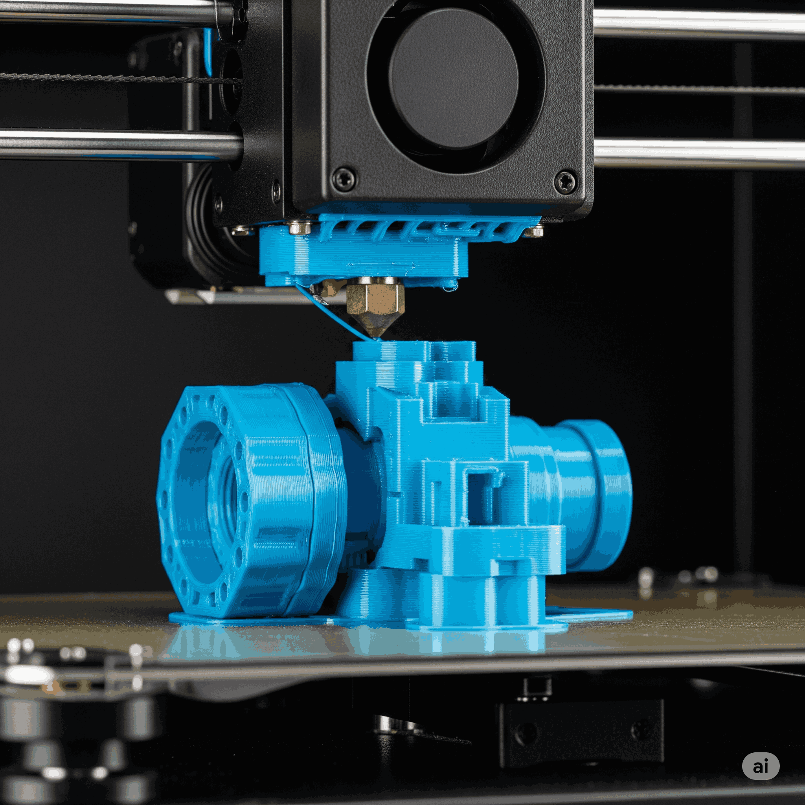

🧱 Fabrication additive (impression 3D FDM)
🎓 a) Définition Académique et Enjeux
La fabrication additive est un procédé de mise en forme d'une pièce par ajout de matière, couche par couche, à partir d'un modèle numérique 3D. La technologie FDM (Fused Deposition Modeling), ou Dépôt de Fil Fondu, est la plus répandue. Elle consiste à faire fondre un filament de thermoplastique à travers une buse chauffée qui se déplace pour déposer la matière sur un plateau, créant ainsi l'objet strate par strate. L'enjeu est de permettre une production rapide, locale et personnalisée d'objets.
🧠 b) Analogie et Simplification Pédagogique
Imagine que tu dessines avec un pistolet à colle chaude. Tu ne dessines pas tout d'un coup, tu déposes un fin cordon de colle. Maintenant, imagine que tu déposes un deuxième cordon exactement par-dessus le premier, puis un troisième, et ainsi de suite. Ta ligne de colle va prendre du volume et devenir un "mur". Une imprimante 3D FDM fait exactement la même chose, mais avec une précision robotique et en suivant un plan très détaillé pour construire un objet entier, couche par couche.
📱 c) Étude de Cas Concrète
Pour créer une pièce de jeu d'échecs, l'imprimante va d'abord dessiner le contour de la base circulaire. Puis elle va remplir cette base. Ensuite, elle va monter d'une fraction de millimètre et dessiner la couche suivante, légèrement différente, et ainsi de suite jusqu'à atteindre le sommet de la pièce. Pour une maquette de maison, elle construira les murs extérieurs et intérieurs simultanément, couche par couche. Pour réparer une trottinette électrique, on pourrait modéliser et imprimer un support de garde-boue cassé, une pièce sur-mesure impossible à trouver dans le commerce.
🛠️ d) Décortiquage Technique - "Sous le Capot"
Le processus global de l'idée à l'objet :
- Modélisation (CAO) : On dessine la pièce en 3D sur un logiciel comme Tinkercad, Fusion 360 ou Onshape. On exporte le fichier au format .STL ou .3MF.
- Tranchage (Slicing) : On importe le fichier .STL dans un "slicer" (ex: Cura, PrusaSlicer). C'est ici qu'on définit tous les paramètres (vitesse, température, etc.).
- Génération du G-code : Le slicer "traduit" le modèle 3D et les paramètres en un fichier de commandes : le G-code. C'est un long fichier texte avec des coordonnées (G0 X10 Y20 Z0.2) que l'imprimante peut lire.
- Impression : On envoie le G-code à l'imprimante (via carte SD ou USB) qui exécute les instructions pour construire l'objet.
🤔 e) Points de Vigilance et Erreurs à Éviter
Erreur 1 : Penser que l'impression 3D est toujours la meilleure solution. Pour produire 10 000 canettes en aluminium, des techniques industrielles comme l'emboutissage sont des millions de fois plus rapides et moins chères. L'impression 3D est idéale pour les pièces uniques ou les petites séries.
Erreur 2 : Négliger l'orientation de la pièce. Une pièce imprimée est comme du bois : elle est beaucoup plus solide dans le sens des couches que perpendiculairement à elles. Une pièce mal orientée peut casser facilement.
💡 f) Le Saviez-Vous ? / Anecdote Technologique
Le premier brevet pour la technologie FDM a été déposé en 1989 par Scott Crump, co-fondateur de la société Stratasys. L'idée lui serait venue en essayant de fabriquer une grenouille pour sa fille avec un pistolet à colle chaude !
🤝 g) Ponts Interdisciplinaires
Mathématiques/Géométrie : Le G-code est une application directe de la géométrie dans l'espace, avec des coordonnées cartésiennes (X, Y, Z) pour chaque point.
Physique-Chimie : Étude des thermoplastiques, de leurs températures de fusion et de leurs propriétés mécaniques.
🚀 h) Pour les Experts (Approfondissement)
Il existe de nombreuses autres technologies de fabrication additive ! La SLA (Stéréolithographie) utilise un laser pour durcir une résine liquide couche par couche, offrant une précision incroyable. Le SLS (Frittage Sélectif par Laser) utilise un laser pour fusionner des poudres (plastique, métal...), permettant de créer des pièces très solides sans supports.